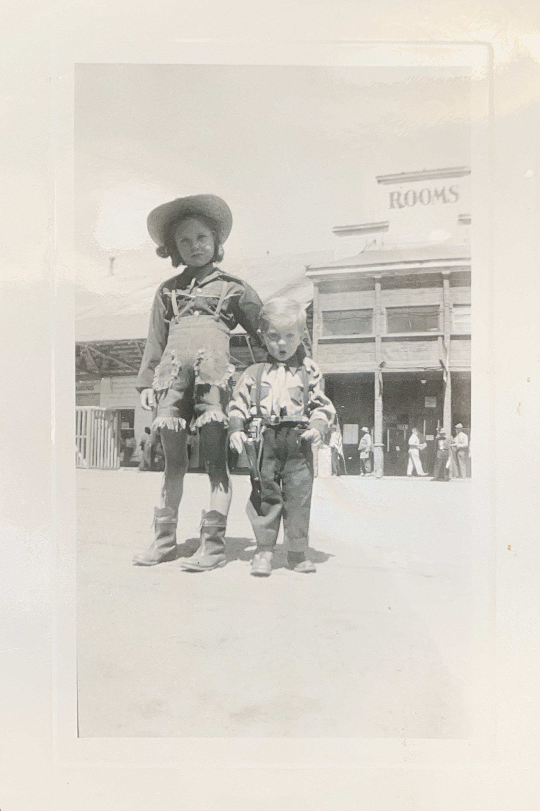
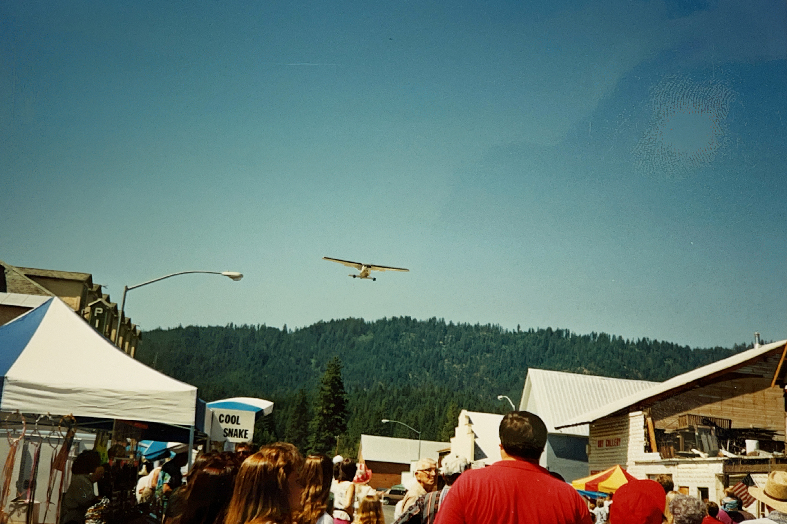
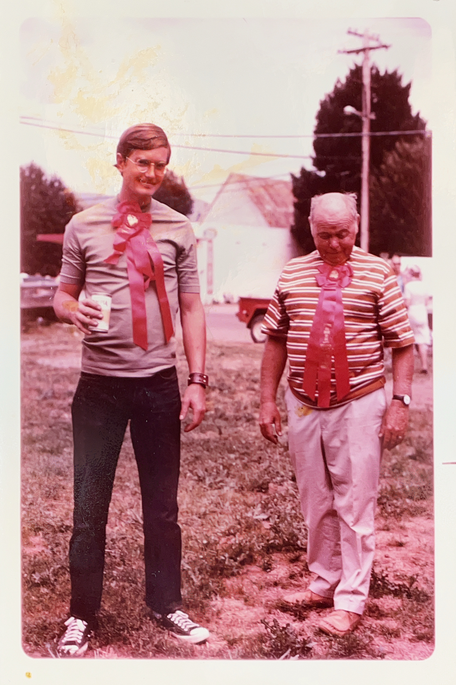
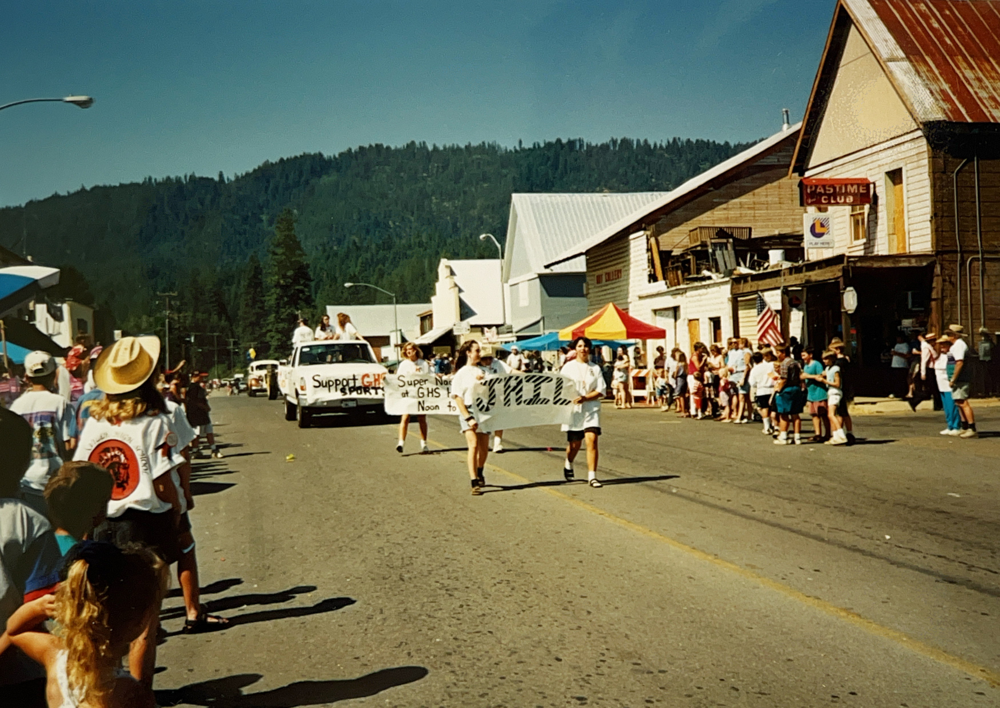
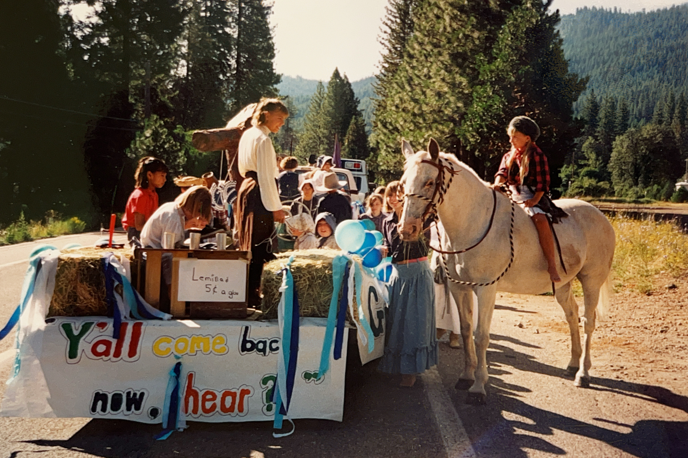
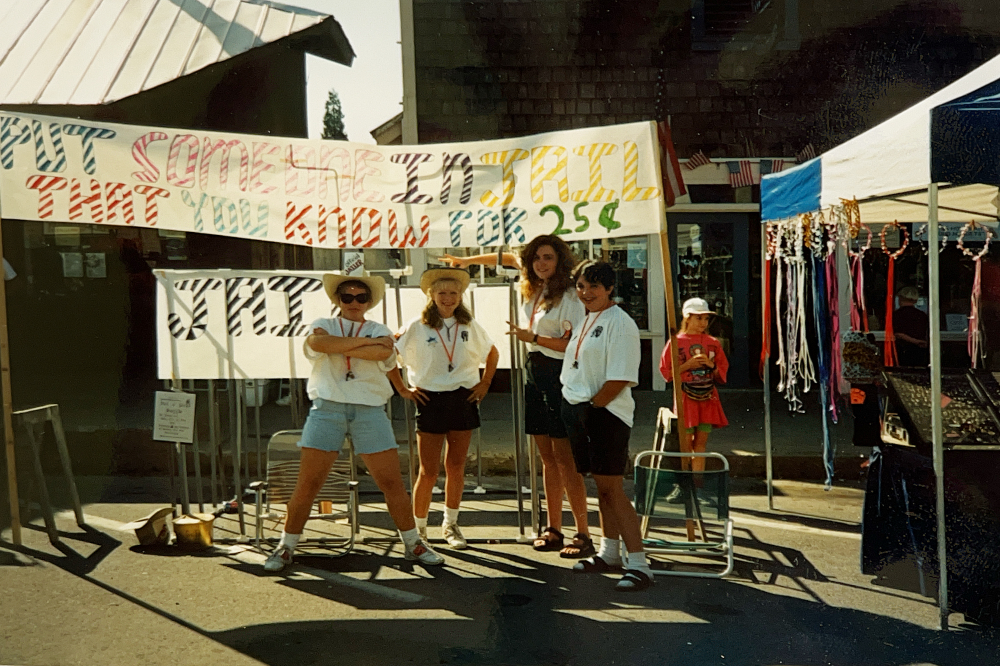

Every third Saturday in July, Main Street in Greenville closes to traffic and opens to something much more important—a celebration.
There are pancakes in the morning, a parade down Main Street, vendors, contests, live music, and a street dance that carries the festivities into the night. This year, men’s softball returns to the weekend lineup, Side Fx will once again close out the day with the street dance, and families will gather to make another year of Gold Diggers memories.
This year’s Gold Diggers celebration has been promoted as the 64th annual. But as we began digging into its history, we discovered something unexpected.
The celebration appears to be much older.
For many years, Gold Diggers has been said to have begun in 1962. However, thanks to the Rahn family sharing treasured photographs from their collection, we now know Tom and Judy Rahn attended Gold Diggers in 1948 as children—fourteen years earlier than the commonly cited beginning. Exactly when the celebration started remains a mystery, but one thing is now clear: Gold Diggers has been bringing the community together longer than many of us realized.

The discovery also made us ask another question.
Why Gold Diggers?
The answer may be simpler than we first thought.
Greenville wasn’t just a town that decided to throw a party called Gold Diggers.
Greenville exists because of gold diggers.
Founded during Northern California’s mining boom, Greenville grew as miners settled the area and nearby mining camps declined. Gold helped establish the town, businesses flourished, and even after a devastating fire destroyed much of downtown in 1881, Greenville rebuilt quickly while the mining industry was still thriving. In time, ranching and logging became the area’s economic backbone, but the town’s beginnings were firmly rooted in the Gold Rush.
*Historical background for Greenville’s early development is drawn from Aaron Walton’s article, “Greenville, California,” published by Western Mining History.
As the years passed, Gold Diggers evolved along with Greenville.
Some traditions became legendary.

Many longtime residents still remember Tom Rahn flying over the parade and dropping ping-pong balls from his airplane. Children would listen for them bouncing off the pavement before racing to collect them. Each ball had a handwritten number prepared by the Gold Diggers committee, with every number corresponding to a prize—from ice cream treats to other surprises. It was one of those simple traditions that generations still remember today.
Others remember taking their children to Wolf Creek to pan for gold, giving young prospectors a chance to experience the very reason Greenville was founded.
Other traditions have changed with the times.

The horseshoe tournament gave way to new events. This year’s celebration welcomes the return of men’s softball, while favorites like the watermelon eating contest, parade, and evening street dance continue to bring people together. Every generation seems to add something of its own, while keeping the heart of Gold Diggers intact.



Looking through old photographs, one thing becomes impossible to miss.
Among the photographs we’ve uncovered is one from 1915 showing a marching band making its way down Main Street during what appears to be a community celebration. Whether that event was Gold Diggers, we can’t yet say. But it reminds us that celebrating on Main Street has been part of Greenville’s story for generations.
Perhaps that’s what Gold Diggers has always been about.
It may have begun as a celebration of the gold that brought people here.
Today, it celebrates the people who stayed.
Through changing traditions, changing generations, and even the devastating Dixie Fire, Greenville continues to do something remarkable every third Saturday in July.
It closes Main Street.
Neighbors gather.
Children make memories.
And the party continues.